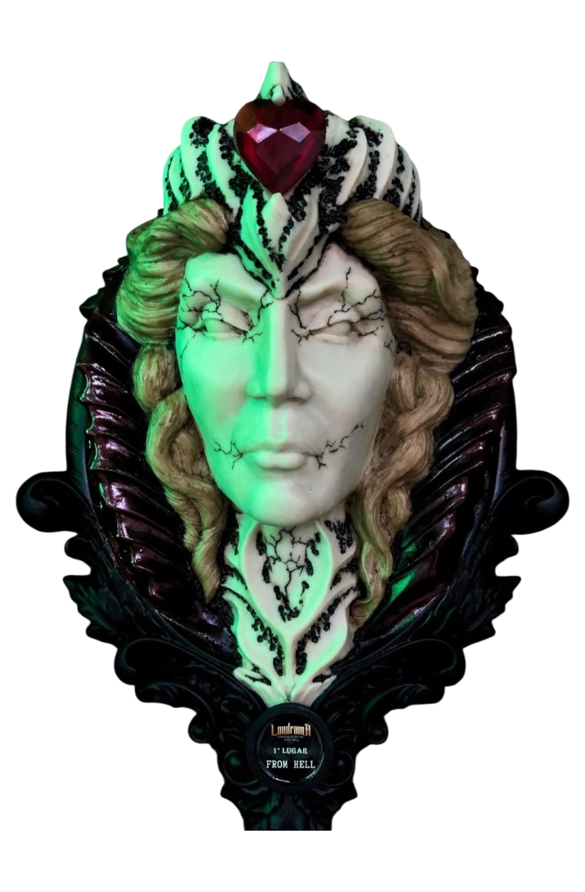

Algumas de nossas premiações:
Bruno Vaneli

Bruno Vaneli
Bruno Vaneli
Bruno Vaneli
Bruno Vaneli
Bruno Vaneli

Bruno Vaneli
Bruno Vaneli
Bruno Vaneli
Bruno Vaneli
Bruno Vaneli
Bruno Vaneli

Carregando...
A hist√≥ria do estúdio √©, no m√≠nimo, curiosa. Ele literalmente caiu no colo do nosso tatuador, já com nome e tudo! Na √©poca, ele não tinha grana pra comprar, então entrou numa sociedade temporária e foi juntando cada centavo pra conseguir pagar dentro do prazo. E o nome? Um amigo ainda soltou um: "tu vai trocar esse nome feio, n√©?" e foi a√≠ que ele decidiu manter. Virou questão de honra. Desde 2016 o estúdio está sob o comando dele. O nome ‚ÄúTch√™ Tattoo‚Äù carrega o orgulho de sermos gaúchos e de valorizarmos nossa cultura. Curiosamente, esse contato mais forte com a tradi√ß√£o gaúcha s√≥ veio depois do estúdio, mas hoje √© uma parte viva da nossa identidade. Aqui, não temos um único estilo. Realismo, old school, fine line, pontilhismo‚Ķ fazemos de tudo. O foco √© estar sempre em movimento, preparado pra qualquer desafio. A ideia √© oferecer mais do que tatuagens: queremos entregar experi√™ncias. Por isso, não vemos quem entra aqui como cliente, mas como algu√©m que pode virar um novo amigo. Nosso diferencial? A conexão. A gente se envolve de verdade com as hist√≥rias por trás de cada tatuagem. E mesmo quando √© s√≥ est√©tica, a gente entende que autoestima tamb√©m √© coisa s√©ria. Hist√≥rias marcantes? Muitas. Em um único ano, foram mais de 860 pessoas atendidas. Teve uma, em especial, que nos marcou muito: uma mãe queria eternizar o pezinho do filho que viveu s√≥ 24 horas. Conversamos profundamente, e juntos decidimos tatuar a frase ‚Äúat√© o infinito‚Äù, porque amor de mãe não tem fim, não importa o tempo vivido. Nosso ambiente √© acolhedor, criativo e ousado. Temos estacionamento, pr√™mios expostos (alguns at√© com visual meio diab√≥lico üòà), e um clima de liberdade pra voc√™ se expressar do seu jeito. Se voc√™ tá buscando mais do que uma tattoo, mas sim uma experi√™ncia verdadeira, √© aqui que come√ßa.
Fa√ßa um tour pelo nosso estudioCome√ßou a tatuar em 2009. Foi um in√≠cio desafiador e muito massa. Naquela √©poca, as máquinas eram simples, as agulhas eram soldadas na mão, e os desenhos vinham de catálogos, Pinterest e iPad nem eram realidade nos estúdios ainda. O que o atraiu pra tatuagem foi o lifestyle e a liberdade que essa profissão oferece. Poder viver da arte, com autenticidade, sempre chamou sua aten√ß√£o. Hoje, seus trabalhos se destacam pela precisão, linhas firmes e aplica√ß√£o s√≥lida. Ele busca sempre entregar algo duradouro e bem feito. Apesar de ter um estilo pr√≥prio, √© flex√≠vel e curte explorar novos caminhos dentro da tattoo. Se inspira em artistas como Fabr√≠cio Galdino, Douglas Prudente e Klebyz Soares. Gosta da pegada deles e está sempre aprendendo com o que observa. A primeira tatuagem que fez foi nele mesmo ü§≠. Tremia muito, sem controle nenhum do equipamento e essa inseguran√ßa durou uns 6 meses. Mas faz parte do processo. Um momento marcante foi em fevereiro de 2020, quando ganhou seu primeiro pr√™mio com uma tattoo feita especialmente pra competi√ß√£o. Estudou bastante, foi confiante, e o resultado veio. O que mais o motiva at√© hoje √© a variedade dessa arte. Cada cliente traz um desafio novo, um estilo diferente. Isso exige estudo constante e √© isso que o mant√©m em movimento.
InstagramÉ imprescindível a limpeza da tatuagem pelo menos 3x ao dia, durante os primeiros dias. Retire toda e qualquer secreção para manter a tattoo higienizada. Lave com sabão neutro e água, e certifique-se de que a área esteja seca antes de envolver com o plástico novamente.
Após o terceiro dia inicie a hidratação da tatuagem. Não use cremes e pomadas junto com o plástico filme. Hidrate a região com o produto indicado pelo tatuador.
Não exponha a tatuagem ao sol durante os primeiros 20 dias. Após este período, faça o uso do filtro solar regularmente.
Durante os 3 primeiros dias é essencial o uso do plástico filme para proteger a região de atrito e bactérias.
Roupas muito justas podem prejudicar o processo de cicatrização. Assim como bater, escorar ou raspar a região demasiadamente.
Deixe as casquinhas caírem naturalmente para evitar falhas e cicatrização irregular.
Quando falamos de um tatuador talentoso e profissional, recomendo fortemente o Bruno! Além de um trabalho de qualidade, oferece um ambiente acolhedor e descontraído, sempre garantindo a melhor experiência possível.
— Bruna Quequeto
Gente melhor lugar da região!!! Atenciosos, lugar super limpo, o tatuador nem se fala super calmo e fez um trabalho impecável!!! Valor super de acordo com o trabalho!! A organização e a limpeza é o que mais me chamou atenção no local, tudo muito bonito e estiloso, materiais de ótima qualidade e moderno, gente faz ali que vc não vai se arrepender!!! Amei minha tatto e meu piercing, com certeza vou fazer muitos mais!!!
— Lidiane Zanchi
Foi uma experiencia maravilhosa!! Fiz uma tatuagem grande, com um ramo de flores cobrindo a cicatriz que eu tenho pela cirurgia de abdominoplastia. Fiquei com queloides por causa da cicatrização e achava feio. O Bruno fez um trabalho incrível, excelente profissional!! Quero elogiar também, o espaço de trabalho, limpo, higienizado e muito organizado. Ambiente acolhedor e familiar, muito gostoso. Parabéns pela competência!!
— Janice Werner
Local super agradavel e higienizado, atendimento super atencioso sem contar que tem um cafézinho liberado para os clientes! Nota 1000 super recomendo e com certeza voltarei para fazer outras tattos!
— Eliézer Silveira
Sabe um atendimento nota 10? O Tch√™ Tattoo com certeza tem! Al√©m de ser um lugar lindo, organizado e com profissionais extremamente qualificados o Tch√™ te recebe com muito carinho. Se estiver procurando um lugar pra fazer uma tattoo dos sonhos, com certeza estará indo no lugar certo. Vou e recomendo! üí•ü§ò
— Eduarda Vannucci
Melhor estúdio de tatuagem da região metropolitana! Ambiente aconchegante, serviço personalizado e profissionais lindos! Sem falar do hall de entrada lotado de prêmios! Excelente!
— Henrique Muller
(51) 9 8224.0241
Domingo E Segunda – FECHADO
Terça-feira - 09:00 às 20:00
Quarta-feira - 09:00 às 23:00
Quinta-feira - 09:00 às 23:00
Sexta-feira - 09:00 às 23:00
* SEM FECHAR AO MEIO DIA